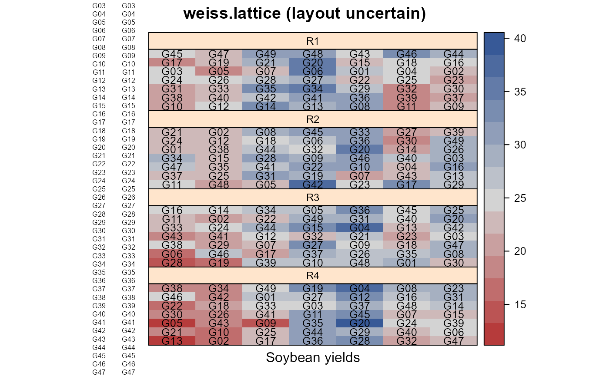

weiss.lattice.RdLattice experiment in soybeans.
data("weiss.lattice")
A data frame with 196 observations on the following 5 variables.
yieldyield (bu/ac)
gengenotype factor, 49 levels
reprep factor, 4 levels
colcolumn
rowrow
Yield test of 49 soybean varieties, grown at Ames, IA, in 1938. Plot dimensions were 3x16 feeet. The varieties are compared to variety 26 (Mukden).
It is not clear how the reps were positioned in the field. On the one hand, the middle three columns of each rep/square are higher yielding, giving the appearance of the reps being stacked on top of each other. On the other hand, the analysis by Weiss uses 24 degrees of freedom 4*(7-1) to fit a separate effect for each column in each rep (instead of across reps).
Weiss, Martin G. and Cox, Gertrude M. (1939). Balanced Incomplete Block and Lattice Square Designs for Testing Yield Differences Among Large Numbers of Soybean Varieties. Table 5. Agricultural Research Bulletins, Nos. 251-259. https://lib.dr.iastate.edu/ag_researchbulletins/24/
# \dontrun{ library(agridat) data(weiss.lattice) dat <- weiss.lattice libs(desplot) desplot(dat, yield~col*row|rep, text=gen, shorten="none", cex=.8, aspect=3/16, # true aspect main="weiss.lattice (layout uncertain)", xlab="Soybean yields")dat <- transform(dat, xf=factor(col), yf=factor(row)) m1 <- lm(terms(yield ~ rep + rep:xf + rep:yf + gen, keep.order=TRUE), data=dat) anova(m1) # Matches Weiss table 7#> Analysis of Variance Table #> #> Response: yield #> Df Sum Sq Mean Sq F value Pr(>F) #> rep 3 91.57 30.525 4.7414 0.0039709 ** #> rep:xf 24 2913.43 121.393 18.8557 < 2.2e-16 *** #> rep:yf 24 390.21 16.259 2.5254 0.0007734 *** #> gen 48 1029.87 21.456 3.3327 2.652e-07 *** #> Residuals 96 618.05 6.438 #> --- #> Signif. codes: 0 '***' 0.001 '**' 0.01 '*' 0.05 '.' 0.1 ' ' 1## Response: yield ## Df Sum Sq Mean Sq F value Pr(>F) ## rep 3 91.57 30.525 4.7414 0.0039709 ** ## rep:xf 24 2913.43 121.393 18.8557 < 2.2e-16 *** ## rep:yf 24 390.21 16.259 2.5254 0.0007734 *** ## gen 48 1029.87 21.456 3.3327 2.652e-07 *** ## Residuals 96 618.05 6.438 # ---------- libs(asreml) # asreml4 m2 <- asreml(yield ~ rep + rep:xf + rep:yf + gen, data=dat)#> Model fitted using the gamma parameterization. #> ASReml 4.1.0 Mon Jan 11 17:08:52 2021 #> LogLik Sigma2 DF wall cpu #> 1 -208.509 6.43798 96 17:08:52 0.0# Weiss table 6 means wald(m2)#> Wald tests for fixed effects. #> Response: yield #> Terms added sequentially; adjusted for those above. #> #> Df Sum of Sq Wald statistic Pr(Chisq) #> (Intercept) 1 127424 19792.5 <2e-16 *** #> rep 3 92 4.7 0.1917 #> gen 48 1863 6.0 1.0000 #> rep:xf 24 2200 14.2 0.9410 #> rep:yf 24 270 1.7 1.0000 #> residual (MS) 6 #> --- #> Signif. codes: 0 '***' 0.001 '**' 0.01 '*' 0.05 '.' 0.1 ' ' 1#> Model fitted using the gamma parameterization. #> ASReml 4.1.0 Mon Jan 11 17:08:53 2021 #> LogLik Sigma2 DF wall cpu #> 1 -208.509 6.43798 96 17:08:53 0.0 #> 2 -208.509 6.43798 96 17:08:53 0.0#> #> Notes: #> - The predictions are obtained by averaging across the hypertable #> calculated from model terms constructed solely from factors in #> the averaging and classify sets. #> - Use 'average' to move ignored factors into the averaging set. #> - The simple averaging set: rep,xf,yf #> #> #> gen predicted.value std.error status #> 1 G01 27.74167 1.461179 Estimable #> 2 G02 24.94643 1.461179 Estimable #> 3 G03 24.38452 1.461179 Estimable #> 4 G04 28.04643 1.461179 Estimable #> 5 G05 19.60357 1.461179 Estimable #> 6 G06 23.79405 1.461179 Estimable #> 7 G07 19.61310 1.461179 Estimable #> 8 G08 29.41786 1.461179 Estimable #> 9 G09 20.36548 1.461179 Estimable #> 10 G10 24.86071 1.461179 Estimable #> 11 G11 24.52738 1.461179 Estimable #> 12 G12 26.74167 1.461179 Estimable #> 13 G13 21.78929 1.461179 Estimable #> 14 G14 27.52738 1.461179 Estimable #> 15 G15 23.33690 1.461179 Estimable #> 16 G16 27.65595 1.461179 Estimable #> 17 G17 26.48929 1.461179 Estimable #> 18 G18 26.36548 1.461179 Estimable #> 19 G19 24.28452 1.461179 Estimable #> 20 G20 32.14643 1.461179 Estimable #> 21 G21 25.98452 1.461179 Estimable #> 22 G22 23.79881 1.461179 Estimable #> 23 G23 22.50357 1.461179 Estimable #> 24 G24 27.06548 1.461179 Estimable #> 25 G25 26.88452 1.461179 Estimable #> 26 G26 25.83214 1.461179 Estimable #> 27 G27 23.75119 1.461179 Estimable #> 28 G28 24.66071 1.461179 Estimable #> 29 G29 23.98452 1.461179 Estimable #> 30 G30 23.57976 1.461179 Estimable #> 31 G31 26.83214 1.461179 Estimable #> 32 G32 20.94167 1.461179 Estimable #> 33 G33 27.12738 1.461179 Estimable #> 34 G34 26.63214 1.461179 Estimable #> 35 G35 28.13214 1.461179 Estimable #> 36 G36 30.24167 1.461179 Estimable #> 37 G37 24.03690 1.461179 Estimable #> 38 G38 25.68452 1.461179 Estimable #> 39 G39 24.04167 1.461179 Estimable #> 40 G40 25.61310 1.461179 Estimable #> 41 G41 25.92738 1.461179 Estimable #> 42 G42 25.75119 1.461179 Estimable #> 43 G43 24.44167 1.461179 Estimable #> 44 G44 28.20833 1.461179 Estimable #> 45 G45 26.31310 1.461179 Estimable #> 46 G46 31.75595 1.461179 Estimable #> 47 G47 25.82738 1.461179 Estimable #> 48 G48 23.82262 1.461179 Estimable #> 49 G49 26.36071 1.461179 Estimable## gen pred.value std.error est.stat ## G01 27.74 1.461 Estimable ## G02 24.95 1.461 Estimable ## G03 24.38 1.461 Estimable ## G04 28.05 1.461 Estimable ## G05 19.6 1.461 Estimable ## G06 23.79 1.461 Estimable # }